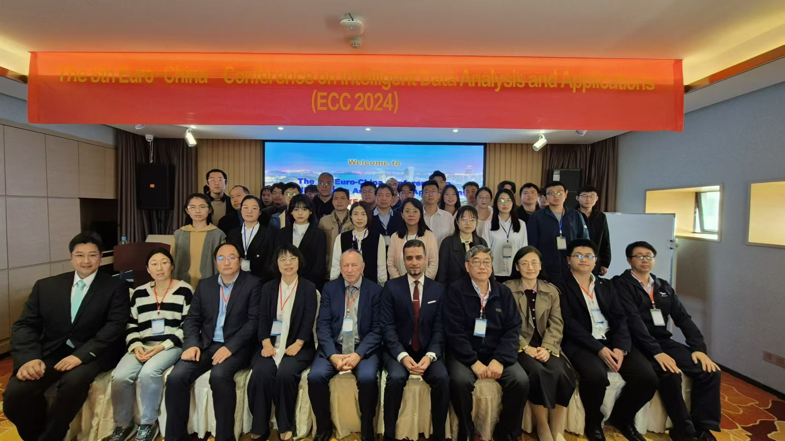
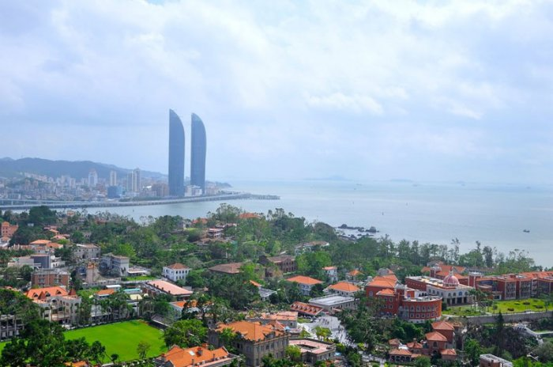

ECC 2024 Highlights
The 8th Euro-China Conference on Intelligent Data Analysis and Applications (ECC 2024) was a successful event that brought together researchers, professionals, and enthusiasts from around the world. Below are some highlights from last year’s conference.
Group Photo
Last Year’s Conference Venue
ECC history
ECC2024 International Conference has been successfully held in Xiamen China (2024.12.12)2024-12-12